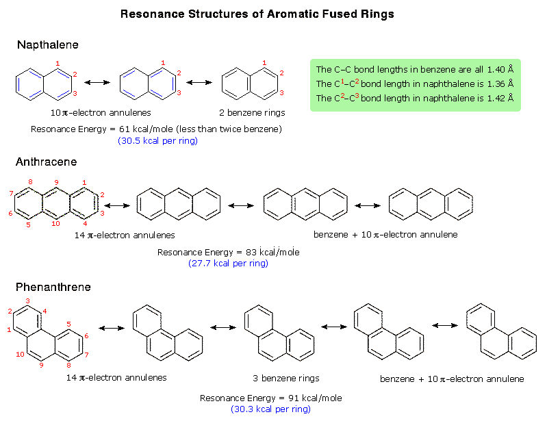
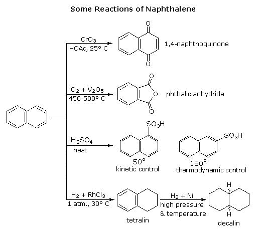
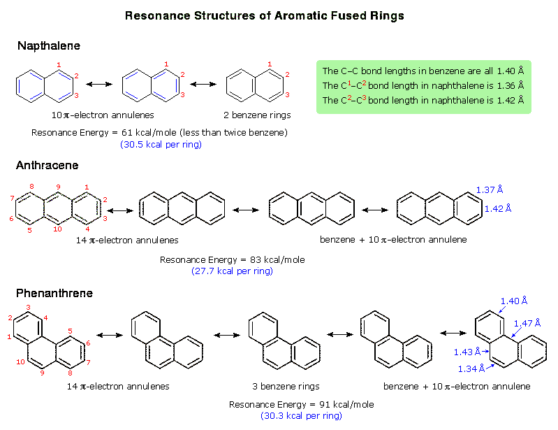

Naphthalene is a bicyclic aromatic hydrocarbon having a resonance stabilization energy per ring slightly less than that of benzene (36 kcal/mole). Three important contributing structures to the resonance hybrid may be drawn, as shown in the following diagram. One structure has two identifiable benzene rings and the other two are 10 π-electron annulenes. An examination of these structures discloses that the bond between carbon#1 and carbon#2 has greater double bond character (roughly 67%) than the bond between carbon#2 and carbon#3 (33%). This difference, which is repeated for other equivalent ring bonds, is reflected in their bond lengths. Although the resulting structure is less symmetric than benzene, the π-electron delocalization remains substantial. Similar perturbations of bond lengths in benzene have been observed as a consequence of angle strain resulting from small fused rings (the Mills-Nixon effect). For an example: The tricyclic aromatic hydrocarbons anthracene and phenanthrene may be analyzed in the same manner. The resonance stabilization energy for each compound is again less than three times that of benzene, with that for anthracene being less than that of phenanthrene.

The chemical reactivity of naphthalene is similar to that of benzene, with electrophilic substitution being common. However, there are significant differences that demonstrate that one of the rings is more subject to oxidative and reductive change than is benzene. The following diagram shows a few such reactions.

The tricyclic aromatic hydrocarbon phenanthrene has substantial resonance stabilization, as shown in the following diagram. One of the five contributing structures has three fused benzene ring moieties, two of the structures have a benzene ring fused to a 10 π-electron annulene, and the remaining two are 14 π-electron annulenes, which are aromatic by the Hückel Rule. An examination of each contributing structure discloses that the carbon#9 to carbon#10 bond has 80% double bond character, whereas the opposite bond across the ring (the carbons are not numbered) has 80% single bond character. Other carbon-carbon bonds have varying bond order, as reflected in the bond lengths shown on the right hand structure. As expected, the carbon#9-carbon#10 bond exhibits double bond-like addition reactions, including facile catalytic hydrogen addition. Indeed all the aromatic fused ring compounds shown here undergo both radical and polar addition reactions more readily than does benzene.

This page is the property of The Edvibe Team. Comments, questions and errors should be sent to contact@edvibe.co.ke. These pages are provided to the IOCD to assist in capacity building in chemical education. 05/05/2013